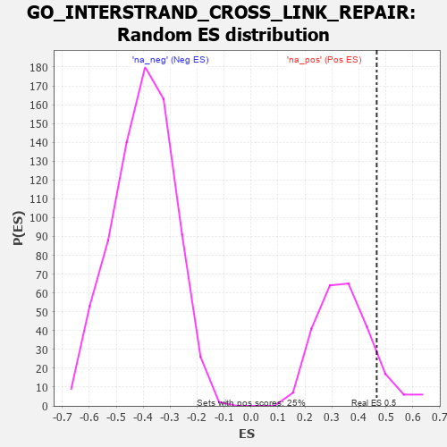

| | | Dataset | 7d |
| Phenotype | NoPhenotypeAvailable |
| Upregulated in class | na_pos |
| GeneSet | GO_INTERSTRAND_CROSS_LINK_REPAIR |
| Enrichment Score (ES) | 0.46643296 |
| Normalized Enrichment Score (NES) | 1.3458949 |
| Nominal p-value | 0.11290322 |
| FDR q-value | 0.4017225 |
| FWER p-Value | 1.0 |
Table: GSEA Results Summary
 Fig 1: Enrichment plot: GO_INTERSTRAND_CROSS_LINK_REPAIR
Fig 1: Enrichment plot: GO_INTERSTRAND_CROSS_LINK_REPAIR
Profile of the Running ES Score & Positions of GeneSet Members on the Rank Ordered List
| PROBE | GENE SYMBOL | GENE_TITLE | RANK IN GENE LIST | RANK METRIC SCORE | RUNNING ES | CORE ENRICHMENT | | 1 | CENPS | | | 439 | 0.666 | 0.0173 | Yes |
| 2 | ERCC1 | | | 453 | 0.660 | 0.0874 | Yes |
| 3 | FAN1 | | | 477 | 0.645 | 0.1546 | Yes |
| 4 | MCM8 | | | 646 | 0.578 | 0.1964 | Yes |
| 5 | RPA1 | | | 817 | 0.527 | 0.2323 | Yes |
| 6 | RFWD3 | | | 843 | 0.521 | 0.2858 | Yes |
| 7 | RPA2 | | | 851 | 0.519 | 0.3414 | Yes |
| 8 | WDR48 | | | 975 | 0.489 | 0.3790 | Yes |
| 9 | XPA | | | 1070 | 0.469 | 0.4182 | Yes |
| 10 | RAD51 | | | 1090 | 0.466 | 0.4664 | Yes |
| 11 | FANCI | | | 1537 | 0.385 | 0.4522 | No |
| 12 | MUS81 | | | 2673 | 0.202 | 0.3315 | No |
| 13 | ATR | | | 2800 | 0.183 | 0.3356 | No |
| 14 | EME1 | | | 3246 | 0.114 | 0.2920 | No |
| 15 | MSH6 | | | 4129 | -0.028 | 0.1842 | No |
| 16 | MCM9 | | | 4163 | -0.036 | 0.1839 | No |
| 17 | FANCM | | | 5824 | -0.413 | 0.0201 | No |
| 18 | UBB | | | 6090 | -0.503 | 0.0414 | No |
| 19 | RNF8 | | | 6147 | -0.518 | 0.0907 | No |
| 20 | UBC | | | 7410 | -1.274 | 0.0705 | No |
Table: GSEA details [plain text format]

Fig 2: GO_INTERSTRAND_CROSS_LINK_REPAIR: Random ES distribution
Gene set null distribution of ES for GO_INTERSTRAND_CROSS_LINK_REPAIR